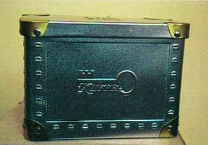

Trade Mark Journal No.2025/041 10 October 2025
WO0000001877280 (3,14,21,30)
Office of origin: France
Date of International Registration:24 January 2025
Date of designation in the UK:
24 January 2025

- Class 3
- Soaps; cakes of toilet soap; perfumery products; eau de toilette, essential oils, cosmetics, hair lotions; cosmetic skin-tanning preparations; cleansing milks and oils for toilet purposes; deodorants for personal use; cosmetic preparations; bath salts (not for medical use); beauty masks; shampoos; lipstick; mascara; blush; make-up and make-up removing products; nail polish and hair spray; dentifrices.
- Class 14
- Busts, figurines, art objects, statues, statuettes, boxes, jewelry cases, caskets, badges, coins made of precious metals and alloys thereof; fine jewelry, jewelry, rings, bracelets, chains, necklaces, pendants, brooches (jewelry), earrings, medals and medallions, cuff links, tie pins, lapel pins; precious stones; timepieces, watches, alarm clocks, wall clocks and chronometric instruments.
- Class 21
- Plates, tea caddies, candy jars, tea infusers, cabarets (trays), non-electric coffeepots, egg cups, baskets for household use, jugs, tea filters, tumblers, cruet stands for oil and vinegar, tea strainers, strainers, trays for household use, dishes, pepper pots, napkin rings, salad bowls, salt cellars, services (crockery), coffee services, tea services, saucers, soup bowls, sugar bowls, cups, teapots, kitchen and household utensils, crockery, candlesticks, candleholders, silver and gold ware (except cutlery, forks and spoons), vases, napkin holders, powder compacts; all these products being made of precious metals and alloys thereof or coated therewith.
- Class 30
- Coffee, tea, cocoa, chocolate, sugar, rice, tapioca, sago, artificial coffee; flours and preparations made from cereals, prepared dishes and cooked dishes based on dough, pasta or rice, bread, pastry and confectionery, edible ices; honey, golden syrup; yeast, baking powder; salt, mustard; vinegar, sauces (condiments); spices; ice for refreshment; beverages based on coffee, tea, cocoa or chocolate; coffee flavorings; vegetable preparations for use as coffee substitutes; unroasted coffee; non-medicinal infusions; iced tea; cocoa beverages with milk, coffee beverages with milk, chocolate beverages with milk.
Monsieur Attoun Abraham
Representative: Monsieur PIGEAUX Fabrice SANTARELLI (Société IPSIDE), Tour TRINITY, , 1 Bis Place de la Défense, F-92400 Courbevoie, FRANCE